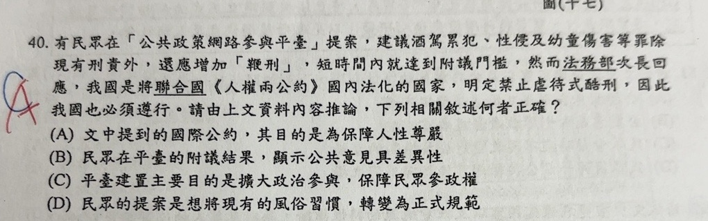

分享原卷｜第40題
請協助核對
優先核對 3／3
- 保留原卷預期A；C前半擴大政策參與成立，後半參政權若採教材狹義四權則不等同。此單選用語範圍說明是否可保留？
目前保存的原始輸入（未訂正）
40@錯題（原始對話中的使用者提問，未訂正；完整原卷內容列於下方。）
開啟原始對話 ↗完整原題
有民眾在「公共政策網路參與平臺」提案，建議酒駕累犯、性侵及幼童傷害等罪除現有刑責外，還應增加「鞭刑」，短時間內就達到附議門檻，然而法務部次長回應，我國是將聯合國《人權兩公約》國內法化的國家，明定禁止虐待式酷刑，因此我國也必須遵行。請由上文資料內容推論，下列相關敘述何者正確？
(A) 文中提到的國際公約，其目的是為保障人性尊嚴
(B) 民眾在平臺的附議結果，顯示公共意見具差異性
(C) 平臺建置主要目的是擴大政治參與，保障民眾參政權
(D) 民眾的提案是想將現有的風俗習慣，轉變為正式規範
先想一想，再查看答案、解說與原圖
原卷作答：原卷藍筆C，紅筆訂正A；源AI誤稱藍紅均A，此稿照真正原卷記錄。
原卷預期(A)；(C)的參政權用語範圍仍有單選疑義。
逐項解析
| 選項與原句 | 判讀 | 句意與判斷理由 |
|---|---|---|
| (A) 文中提到的國際公約，其目的是為保障人性尊嚴 | 應選 | 原卷預期答案。人權公約禁止酷刑，保護每個人的尊嚴。 |
| (B) 民眾在平臺的附議結果，顯示公共意見具差異性 | 不選 | 附議量只證明支持數達門檻，未顯示意見分布。 |
| (C) 平臺建置主要目的是擴大政治參與，保障民眾參政權 | 不選 | 前半擴大政治參與成立；後半參政權若依教材狹義四權分類則不能直接等同。廣義下仍合理，單選用語待確認。 |
| (D) 民眾的提案是想將現有的風俗習慣，轉變為正式規範 | 不選 | 本案要求新增鞭刑，不是把既有風俗習慣轉成法律。 |
詳細說明與解題步驟
原卷預期A。《人權兩公約》保障基本人權；《公民與政治權利國際公約》第7條禁止酷刑及殘忍、不人道或有辱人格的待遇或處罰，其目的包含保障人的尊嚴。即使犯罪者仍須受合法制裁，國家也不能任意施以酷刑。
B：短期達附議門檻只顯示有一定數量的人支持，沒有呈現正反或不同立場的分布，不能單憑此推知公共意見的差異性。D：提案是新增刑罰，不是將原有社會習俗法制化。
C的用語有範圍疑義，不能只用「A比較直接」就說C全錯。公共政策平臺確有擴大政策參與的作用；若「參政權」依國中教材及憲法第17條的選舉、罷免、創制、複決作狹義分類，提案及附議不等同直接行使這四權。若採廣義政治參與，C仍有合理性。因此保留完整原選項、原卷預期A及此單選用語限制，列待確認，不擅改C。
核對：[JOIN平臺關於我們](https://join.gov.tw/aboutus/index)、[憲法第17條](https://law.moj.gov.tw/LawClass/LawSingle.aspx?pcode=A0000001&flno=17)。
核對註記：已實開真正上傳原卷及本題裁切成品，核對完整題幹、全部選項、必要材料與解說。未提供實際考試日期，日期取本題首次使用者訊息（台灣時間）；無冊次或課次證據，歸綜合。本題原題資料齊全；C參政權用語範圍及單選唯一性另列monitor待確認。
原圖（僅本題）
